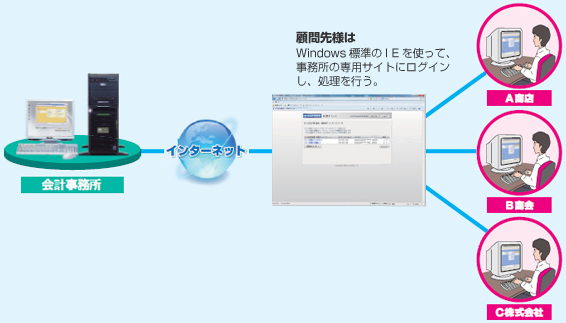
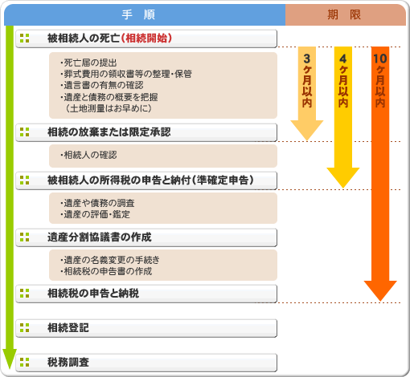
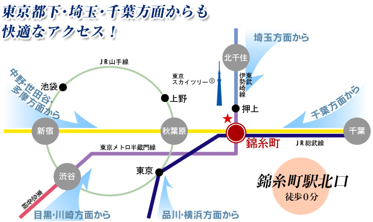

お知らせ
- 2026/11/09 事務所便りを更新しました
- お役立ち情報を更新しました
- 2011/07/15 ホームページをリニューアルしました
受付時間：平日 9:00〜17:00
業務案内
墨田区・錦糸町で相続や事業経営に関する全てをサポートする税理士です。各種税金のご相談はもちろん、経理全般、資金調達など事業を行っていく上で出てくる様々な問題をトータルでサポートさせて頂きます。また、公認会計士、弁護士、司法書士、土地家屋調査士、社会保険労務士という各方面のエキスパートと提携しており、お客様のあらゆるニーズに対応しております。
税務顧問・総合サポート
決算書を作成し申告するだけでなく、予定申告・年末調整・給与支払報告書、支払調書、法定調書合計表の作成など、会社経営に必要な様々な手続きをサポートします。
- 経理全般（定期的な担当者訪問による税務相談・経営相談）
- 諸官庁許認可申請業務（産業廃棄物処理業、宅地建物取引業、建設業 等）
- 確定申告（サラリーマンの方の還付申告もご相談ください）
- 各種相談（財務状況・資金繰り・代表者個人の資産運用・生涯設計）
相続・事業承継対策
事業承継の準備に"早すぎる"ということは決してありません。親族内承継、従業員等への承継、M&Aの3つの方法から、お客様にとってベストな事業承継をお手伝いいたします。
数多くの相続税申告をサポートしてきた実績を活かし、長期的な視点での相続対策をお手伝いいたします。
遺言書作成サポート
家族や大切な方の間で争いが起こらぬよう遺言書を作成しておく事をお勧めしております。遺言は残された家族に対する最後のラブレターともいえるでしょう。
公正証書遺言・自筆証書遺言の違いから、確実で安全性の高い作成方法までご相談ください。
会社設立・起業支援
創業・新規事業の開業にあたって発生する創業資金の調達、人事・労務管理、関係諸官庁への届出などの問題に対し、お客様のご都合にあわせた解決方法を提案し、速やかに実行してまいります。
設立後の許認可や届出、資金調達や各種税金の問題にも対応いたします。
資金調達支援
同じ業績の会社であっても融資を受けられる会社と受けられない会社があります。毎年数十社の成功実績を積んできましたので、金融機関との直接の交渉も行い、会計や資金的不安をあらゆる角度からサポート致します。
セカンドオピニオン
現在の顧問税理士との良好な関係を保ちながら、複数の税理士の意見を聞くサービスです。「税金が高い」「ほかにいい節税対策はないか」と思った時にご利用ください。
システム化支援

会計ソフトの導入サポートに力を入れております。面倒な初期設定や入力指導もさせていただきます。コンピュータが初めての方でも仕訳が苦手な方でも大丈夫です。
登録政治資金監査人
総務省・政治資金適正化委員会の登録政治資金監査人の登録、研修を終了しております。当事務所では2名の登録政治資金監査人を有しております。
政治資金監査マニュアルに基づき、政治資金監査を行い、政治資金監査報告書を作成します。
相続対策について
相続には3つの対策が必要だと言われております。
- 節税対策：生前贈与等を利用して相続税の納税額そのものを減らす
- 納税資金対策：生命保険金等を活用して相続税の納税資金を確保する
- 遺産分割対策：家族間の無用な争いを避けるため遺言書の作成をお勧めしております
遺産相続は通常の税務申告と異なり、お客様が一生に一度か、多い方でも三度程度しか体験しないものです。当事務所では、これまでの数多くの相続税申告をサポートしてきた実績を活かして、皆様の不安や疑問を解決するとともに、良きパートナーとして長期的な視点での相続対策をお手伝いさせていただいております。

税理士報酬
下記はあくまで目安です。具体的な金額につきましては、御社の規模、業種、経理体制のほか、当事務所がどのようなサービスを行うかにより、総合的に判断し、ご提示させていただきます。もちろん、御社の希望金額、予算等をお聞きして、納得のゆくまで、ご相談に乗らせていただきます。
法人
| 年商 | 顧問報酬（毎月） | 決算報酬（法人税） | 決算報酬（消費税） |
|---|---|---|---|
| 5,000万円未満 | 33,000円 | 198,000円 | 99,000円 |
| 2億円未満 | 55,000円 | 330,000円 | 165,000円 |
| 5億円未満 | 88,000円 | 528,000円 | 264,000円 |
| 10億円未満 | 110,000円 | 660,000円 | 330,000円 |
| 30億円未満 | 165,000円 | 990,000円 | 495,000円 |
| 50億円未満 | 198,000円 | 1,188,000円 | 594,000円 |
| 50億円以上 | 220,000円 | 1,320,000円 | 660,000円 |
個人
| 年商 | 顧問報酬（毎月） | 決算報酬（所得税） | 決算報酬（消費税） |
|---|---|---|---|
| 5,000万円未満 | 33,000円 | 132,000円 | 66,000円 |
| 1億円未満 | 44,000円 | 176,000円 | 88,000円 |
| 2億円未満 | 55,000円 | 220,000円 | 110,000円 |
| 5億円未満 | 77,000円 | 308,000円 | 154,000円 |
| 5億円以上 | 88,000円 | 352,000円 | 176,000円 |
事務所案内
所長挨拶
顧問先の繁栄をサポートする事務所です。
当事務所は、1975年にJR総武線錦糸町北口前で開業致しました。開業以来、会社経営者や個人事業者の皆様方への、税務相談及び申告、経営計画、節税対策、資金繰り相談等を中心として、事業経営に関する全てを総合的にサポートさせて頂いております。
また、資産家や事業経営者にとっての大きな問題である相続・事業継承につきましては、遺言書作成の相談、相続財産の分割、相続税の節税・納税対策を含めて、スムーズな相続が遂行されるよう長期的な視野で提案させていただいております。
現在では、弁護士、司法書士、行政書士、ファイナンシャルプランナー等の各専門家と提携してワンストップサービスも提供しておりますので、民事法務、登記、裁判手続、労務管理、社会保険、許認可などの法的な問題や制度についても対応しております。
2022年7月9日に、代表者を大西康秀から大西善之に交代する運びとなりました。ここまでコツコツと積み上げてきた信頼と実績は、私たちの経験であり財産です。この経験を基に皆様のトータル的なアドバイザーとして身近なパートナーであり続けたいと思っております。
事務所概要
| 名称 | 大西会計事務所 |
|---|---|
| 所長 | 大西 善之 |
| 資格 | 税理士・行政書士・政治資金監査人 |
| スタッフ | 税理士有資格者をはじめ、20代から40代の専門知識をもったスタッフが多数在籍 |
| 所在地 | 東京都墨田区錦糸3丁目2番1号 アルカイースト5F |
| TEL | 03-3626-2035 |
| FAX | 03-3621-3843 |
| 開業 | 昭和50年12月18日 |
お役立ち情報
毎月更新コンテンツ
- 事務カレンダー：翌々月までのリストが付いた便利なカレンダーです
- 今月の経理・税務：毎月の事務作業のポイントをまとめました
- 新法令・通達の解説：新しい法令・通達をわかりやすく解説します
- これからの法改正の動き：今後の法改正の動向に着目しました
よくある質問
Q. 税理士（会計事務所）ってどんなことしてくれるの？
A. 税理士が提供するサービスは税金を計算し、申告書を作成するだけではありません。新規起業支援、相続・事業承継対策、財産管理や社長個人の所得税の申告・ライフプランニングなど、様々な問題に対応いたします。
Q. 税理士（会計事務所）の料金ってどうなっているのですか？
A. お客様の実態やニーズなどを把握し、個別にお見積もりをさせていただいております。詳しくは税理士報酬をご覧ください。
Q. 節税対策はできますか？
A. もちろんできます。お客様の利益を最優先に考え、決算の前に予測の決算報告書を作成し、決算・節税対策を提案させていただいております。ただし、過度な租税回避等はお断りさせていただいております。
Q. 税務調査の立会いはしてもらえますか？
A. 経験豊富な税理士が税務調査の立会いを行います。
Q. 融資や資金繰りの相談はできますか？
A. できます。当事務所では、金融機関と連携しております。
Q. 相続や贈与に関する相談はできますか？
A. できます。当事務所では、相続税関係の税務も得意としております。相続税の申告が必要かどうか、納税期限や遺留分、遺言の書き方など、相続に関する疑問にもお答えします。
Q. 不動産の活用について相談はできますか？
A. できます。資産管理や不動産管理の問題対策を行います。
スタッフ募集
開業37年の実績に基づき、幅広い層のクライアント・ビジネスモデルを有しており、生涯を通じて役に立つ様々なスキルを身につけることができます。向上心があり、明るく真面目で長く勤めていただける方、お待ちしております。
| 正社員 | パート・アルバイト | |
|---|---|---|
| 業務内容 | 税務書類の作成及び税務相談に関する業務、財務書類等の作成、会計帳簿の記帳代行 | |
| 実務経験 | 未経験可 | |
| 資格 | 税理士試験科目合格者（科目数は不問）、日商簿記2級以上、その他の条件：パソコン操作（ワード、エクセル）できる方 | |
| 年齢 | 20歳〜25歳 | 20歳〜40歳 |
| 勤務地 | 東京都墨田区錦糸3-2-1 アルカイースト5F | |
| 勤務時間 | 8時50分〜17時50分（休憩1時間） ※勤務日数・就業時間等はご相談に応じます | |
| 給与 | 20万円〜 | 時給：最低賃金以上 ※経験・能力に応じ、優遇いたします |
| 休日、休暇 | 土、日、祝日、年末年始、有給、試験休暇 | ― |
| 試用期間 | 有 | 無 |
| 待遇、福利厚生 | 交通費支給（月2万円まで）、各種保険完備 | 交通費支給（月1万円まで） |
お問い合わせ先：採用担当 大西まで TEL 03-3626-2035
アクセス
- 住所
- 東京都墨田区錦糸3丁目2番1号 アルカイースト5F
- 電話
- 03-3626-2035（受付時間：平日9:00〜17:00）
- FAX
- 03-3621-3843
- 最寄り
- JR総武線 錦糸町駅 北口駅前 ／ 東京メトロ半蔵門線 錦糸町駅 3番出口 徒歩0分 ／ 地下2階 有料駐車場有
